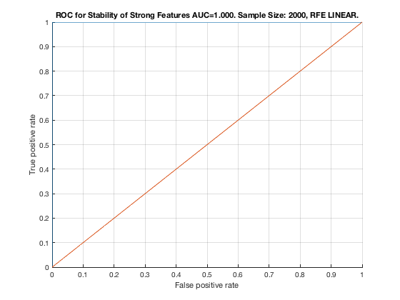

Feature Stability of RFE_LINEAR on MltNet with 2000 samples.
unit_stability_type(2000, 2, "MltNet")
Figure 93. ROC for Stability of Strong Features AUC=1.000. Sample Size: 2000, RFE LINEAR. __________________________________________________________________________________________
Table 93. Feature Stability of RFE LINEAR on MltNet with 2000 samples.
_______________________________________________________________________
SELECTED COUNTS: Strong=23, Weak=165, Irrelevant=0
TOTAL COUNTS: Strong=23, Weak=1300, Irrelevant=4
Feature_Number Stability Type Path_Length N_MBS Equivalence
______________ _________ ____________ ___________ _____ ___________
21 ' 0.640 ' ' STRONG ' 1 0 21
23 ' 0.636 ' ' STRONG ' 3 0 21
22 ' 0.630 ' ' STRONG ' 2 0 21
18 ' 0.398 ' ' STRONG ' 1 0 18
19 ' 0.390 ' ' STRONG ' 2 0 18
20 ' 0.380 ' ' STRONG ' 3 0 18
1 ' 0.156 ' ' STRONG ' 1 0 1
4 ' 0.156 ' ' STRONG ' 4 0 1
5 ' 0.150 ' ' STRONG ' 3 0 1
6 ' 0.148 ' ' STRONG ' 3 0 1
3 ' 0.146 ' ' STRONG ' 4 0 1
2 ' 0.140 ' ' STRONG ' 2 0 1
7 ' 0.138 ' ' STRONG ' 1 0 7
9 ' 0.138 ' ' STRONG ' 3 0 7
8 ' 0.136 ' ' STRONG ' 2 0 7
10 ' 0.136 ' ' STRONG ' 4 0 7
14 ' 0.126 ' ' STRONG ' 3 216 12
11 ' 0.124 ' ' STRONG ' 4 270 7
13 ' 0.120 ' ' STRONG ' 2 540 12
17 ' 0.120 ' ' STRONG ' 4 810 12
12 ' 0.118 ' ' STRONG ' 1 1080 12
16 ' 0.112 ' ' STRONG ' 2 1350 12
15 ' 0.110 ' ' STRONG ' 3 1620 12
39 ' 0.080 ' ' weak ' 4 1620 39
70 ' 0.076 ' ' weak ' 4 1620 39
96 ' 0.072 ' ' weak ' 4 1620 39
28 ' 0.066 ' ' weak ' 5 1620 28
59 ' 0.054 ' ' weak ' 5 1620 28
85 ' 0.048 ' ' weak ' 5 1620 28
40 ' 0.038 ' ' weak ' 3 1620 40
111 ' 0.038 ' ' weak ' 5 1620 28
122 ' 0.038 ' ' weak ' 4 1620 39
148 ' 0.030 ' ' weak ' 4 1620 39
174 ' 0.030 ' ' weak ' 4 1620 39
200 ' 0.030 ' ' weak ' 4 1620 39
226 ' 0.030 ' ' weak ' 4 1620 39
71 ' 0.026 ' ' weak ' 3 1620 40
97 ' 0.026 ' ' weak ' 3 1620 40
137 ' 0.018 ' ' weak ' 5 1620 28
163 ' 0.018 ' ' weak ' 5 1620 28
189 ' 0.018 ' ' weak ' 5 1620 28
215 ' 0.018 ' ' weak ' 5 1620 28
252 ' 0.018 ' ' weak ' 4 1620 39
123 ' 0.016 ' ' weak ' 3 1620 40
241 ' 0.016 ' ' weak ' 5 1620 28
267 ' 0.014 ' ' weak ' 5 1620 28
149 ' 0.012 ' ' weak ' 3 1620 40
175 ' 0.012 ' ' weak ' 3 1620 40
201 ' 0.012 ' ' weak ' 3 1620 40
227 ' 0.012 ' ' weak ' 3 1620 40
278 ' 0.012 ' ' weak ' 4 1620 39
253 ' 0.010 ' ' weak ' 3 1620 40
304 ' 0.010 ' ' weak ' 4 1620 39
330 ' 0.010 ' ' weak ' 4 1620 39
356 ' 0.010 ' ' weak ' 4 1620 39
279 ' 0.008 ' ' weak ' 3 1620 40
305 ' 0.008 ' ' weak ' 3 1620 40
331 ' 0.008 ' ' weak ' 3 1620 40
357 ' 0.008 ' ' weak ' 3 1620 40
382 ' 0.008 ' ' weak ' 4 1620 39
383 ' 0.008 ' ' weak ' 3 1620 40
409 ' 0.008 ' ' weak ' 3 1620 40
435 ' 0.008 ' ' weak ' 3 1620 40
461 ' 0.008 ' ' weak ' 3 1620 40
487 ' 0.008 ' ' weak ' 3 1620 40
408 ' 0.006 ' ' weak ' 4 1620 39
434 ' 0.006 ' ' weak ' 4 1620 39
460 ' 0.006 ' ' weak ' 4 1620 39
486 ' 0.006 ' ' weak ' 4 1620 39
512 ' 0.006 ' ' weak ' 4 1620 39
538 ' 0.006 ' ' weak ' 4 1620 39
564 ' 0.006 ' ' weak ' 4 1620 39
590 ' 0.006 ' ' weak ' 4 1620 39
616 ' 0.006 ' ' weak ' 4 1620 39
293 ' 0.004 ' ' weak ' 5 1620 28
319 ' 0.004 ' ' weak ' 5 1620 28
345 ' 0.004 ' ' weak ' 5 1620 28
371 ' 0.004 ' ' weak ' 5 1620 28
397 ' 0.004 ' ' weak ' 5 1620 28
642 ' 0.004 ' ' weak ' 4 1620 39
668 ' 0.004 ' ' weak ' 4 1620 39
694 ' 0.004 ' ' weak ' 4 1620 39
720 ' 0.004 ' ' weak ' 4 1620 39
746 ' 0.004 ' ' weak ' 4 1620 39
772 ' 0.004 ' ' weak ' 4 1620 39
798 ' 0.004 ' ' weak ' 4 1620 39
824 ' 0.004 ' ' weak ' 4 1620 39
850 ' 0.004 ' ' weak ' 4 1620 39
876 ' 0.004 ' ' weak ' 4 1620 39
902 ' 0.004 ' ' weak ' 4 1620 39
928 ' 0.004 ' ' weak ' 4 1620 39
954 ' 0.004 ' ' weak ' 4 1620 39
980 ' 0.004 ' ' weak ' 4 1620 39
1006 ' 0.004 ' ' weak ' 4 1620 39
1032 ' 0.004 ' ' weak ' 4 1620 39
1058 ' 0.004 ' ' weak ' 4 1620 39
1084 ' 0.004 ' ' weak ' 4 1620 39
1110 ' 0.004 ' ' weak ' 4 1620 39
1136 ' 0.004 ' ' weak ' 4 1620 39
1162 ' 0.004 ' ' weak ' 4 1620 39
1188 ' 0.004 ' ' weak ' 4 1620 39
1214 ' 0.004 ' ' weak ' 4 1620 39
1240 ' 0.004 ' ' weak ' 4 1620 39
1266 ' 0.004 ' ' weak ' 4 1620 39
1292 ' 0.004 ' ' weak ' 4 1620 39
1318 ' 0.004 ' ' weak ' 4 1620 39
35 ' 0.002 ' ' weak ' 7 1620 35
66 ' 0.002 ' ' weak ' 7 1620 35
92 ' 0.002 ' ' weak ' 7 1620 35
118 ' 0.002 ' ' weak ' 7 1620 35
144 ' 0.002 ' ' weak ' 7 1620 35
170 ' 0.002 ' ' weak ' 7 1620 35
196 ' 0.002 ' ' weak ' 7 1620 35
222 ' 0.002 ' ' weak ' 7 1620 35
248 ' 0.002 ' ' weak ' 7 1620 35
274 ' 0.002 ' ' weak ' 7 1620 35
300 ' 0.002 ' ' weak ' 7 1620 35
326 ' 0.002 ' ' weak ' 7 1620 35
352 ' 0.002 ' ' weak ' 7 1620 35
378 ' 0.002 ' ' weak ' 7 1620 35
404 ' 0.002 ' ' weak ' 7 1620 35
423 ' 0.002 ' ' weak ' 5 1620 28
430 ' 0.002 ' ' weak ' 7 1620 35
449 ' 0.002 ' ' weak ' 5 1620 28
456 ' 0.002 ' ' weak ' 7 1620 35
475 ' 0.002 ' ' weak ' 5 1620 28
482 ' 0.002 ' ' weak ' 7 1620 35
501 ' 0.002 ' ' weak ' 5 1620 28
508 ' 0.002 ' ' weak ' 7 1620 35
513 ' 0.002 ' ' weak ' 3 1620 40
527 ' 0.002 ' ' weak ' 5 1620 28
534 ' 0.002 ' ' weak ' 7 1620 35
539 ' 0.002 ' ' weak ' 3 1620 40
553 ' 0.002 ' ' weak ' 5 1620 28
560 ' 0.002 ' ' weak ' 7 1620 35
565 ' 0.002 ' ' weak ' 3 1620 40
579 ' 0.002 ' ' weak ' 5 1620 28
586 ' 0.002 ' ' weak ' 7 1620 35
591 ' 0.002 ' ' weak ' 3 1620 40
612 ' 0.002 ' ' weak ' 7 1620 35
617 ' 0.002 ' ' weak ' 3 1620 40
638 ' 0.002 ' ' weak ' 7 1620 35
643 ' 0.002 ' ' weak ' 3 1620 40
664 ' 0.002 ' ' weak ' 7 1620 35
669 ' 0.002 ' ' weak ' 3 1620 40
690 ' 0.002 ' ' weak ' 7 1620 35
695 ' 0.002 ' ' weak ' 3 1620 40
716 ' 0.002 ' ' weak ' 7 1620 35
721 ' 0.002 ' ' weak ' 3 1620 40
742 ' 0.002 ' ' weak ' 7 1620 35
747 ' 0.002 ' ' weak ' 3 1620 40
768 ' 0.002 ' ' weak ' 7 1620 35
773 ' 0.002 ' ' weak ' 3 1620 40
794 ' 0.002 ' ' weak ' 7 1620 35
799 ' 0.002 ' ' weak ' 3 1620 40
820 ' 0.002 ' ' weak ' 7 1620 35
825 ' 0.002 ' ' weak ' 3 1620 40
846 ' 0.002 ' ' weak ' 7 1620 35
851 ' 0.002 ' ' weak ' 3 1620 40
872 ' 0.002 ' ' weak ' 7 1620 35
877 ' 0.002 ' ' weak ' 3 1620 40
898 ' 0.002 ' ' weak ' 7 1620 35
903 ' 0.002 ' ' weak ' 3 1620 40
924 ' 0.002 ' ' weak ' 7 1620 35
929 ' 0.002 ' ' weak ' 3 1620 40
950 ' 0.002 ' ' weak ' 7 1620 35
955 ' 0.002 ' ' weak ' 3 1620 40
976 ' 0.002 ' ' weak ' 7 1620 35
981 ' 0.002 ' ' weak ' 3 1620 40
1002 ' 0.002 ' ' weak ' 7 1620 35
1007 ' 0.002 ' ' weak ' 3 1620 40
1028 ' 0.002 ' ' weak ' 7 1620 35
1033 ' 0.002 ' ' weak ' 3 1620 40
1054 ' 0.002 ' ' weak ' 7 1620 35
1059 ' 0.002 ' ' weak ' 3 1620 40
1080 ' 0.002 ' ' weak ' 7 1620 35
1085 ' 0.002 ' ' weak ' 3 1620 40
1106 ' 0.002 ' ' weak ' 7 1620 35
1111 ' 0.002 ' ' weak ' 3 1620 40
1132 ' 0.002 ' ' weak ' 7 1620 35
1137 ' 0.002 ' ' weak ' 3 1620 40
1163 ' 0.002 ' ' weak ' 3 1620 40
1189 ' 0.002 ' ' weak ' 3 1620 40
1215 ' 0.002 ' ' weak ' 3 1620 40
1241 ' 0.002 ' ' weak ' 3 1620 40
1267 ' 0.002 ' ' weak ' 3 1620 40
1293 ' 0.002 ' ' weak ' 3 1620 40
1319 ' 0.002 ' ' weak ' 3 1620 40